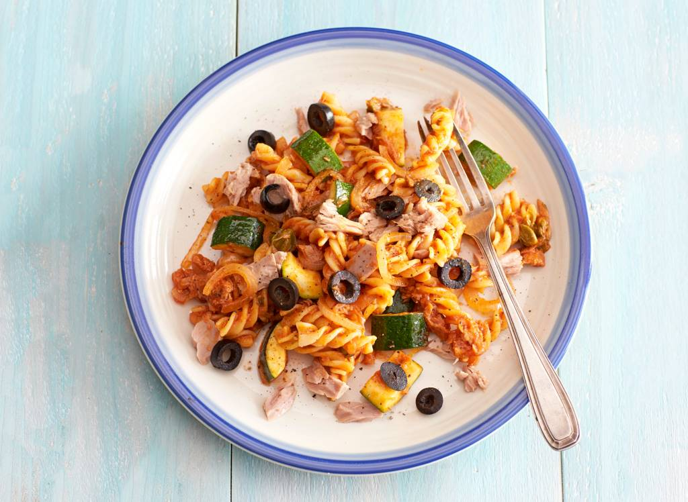

Fusilli met tonijn

ingedienten
4 personen
- 300g fusilli
- 46g princes ansjovis in olijfolie in blik
- 2 courgettes
- 2 uien
- 30g kappertjes
- Prines tonijnstukken in zonnebloemolie
- 520g AH BASIC pastasous basilicum
- 4el zwarteolijvenplakjes
berijding
- Kook de pasta volgens de aanwijzingen op de verpakking beetgaar.
- Snijd ondertussen de ansjovisfilets fijn en vang de olie op in een hapjespan. Snijd de courgettes in de lengte in vieren. Verwijder met een scherp mes de zaadlijsten en snijd het vruchtvlees in plakken van 1 cm dik. Snijd de ui in halve ringen.
- Verhit de opgevangen olie. Voeg de ansjovis en kappertjes toe en bak 2 min. mee op middelhoog vuur. Voeg de courgette en ui toe en bak 3 min. Laat de tonijn uitlekken. Voeg de pastasaus en de helft van de tonijn toe aan het courgettemengsel. Schep om en laat 2 min. koken.